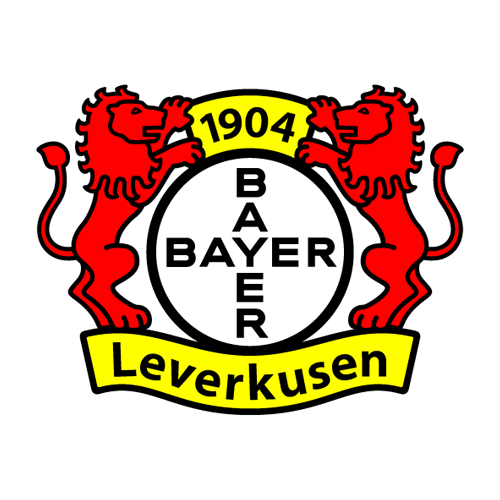

Die Werkself
El Bayer Leverkusen fue fundado en 1904. El club pertenece a la ciudad de Leverkusen y participa en la Bundesliga.
| Dato | Información |
|---|---|
| Fundación | 1904 |
| País | Alemania 🇩🇪 |
| Ciudad | Leverkusen |
| Estadio | BayArena |
| Liga | Bundesliga |
| Competición | Logro |
|---|---|
| Bundesliga | Campeón |
| Copa de Alemania | Campeón |
| Europa League | Campeón |
El Bayer Leverkusen es conocido como "Die Werkself", que puede traducirse como "El equipo de la fábrica".